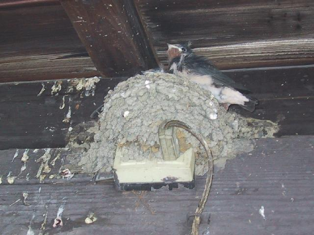
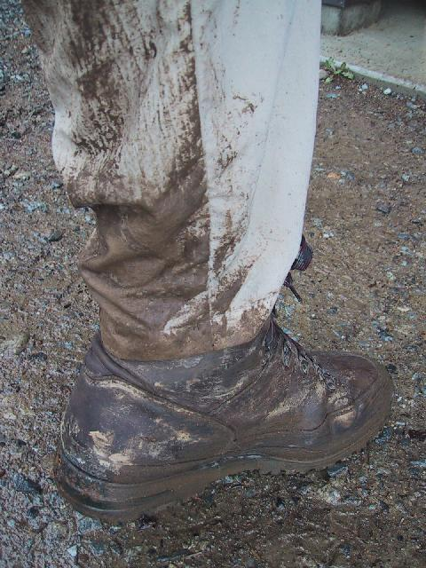
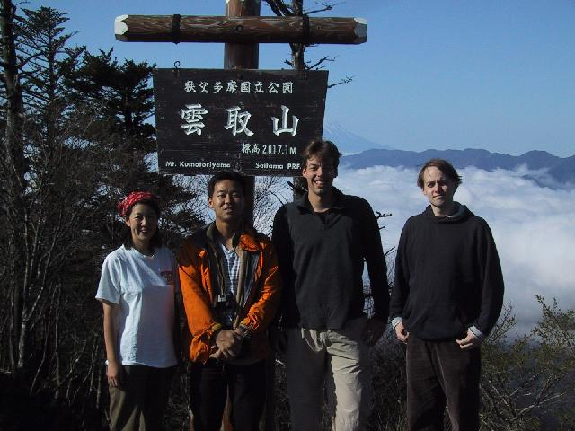
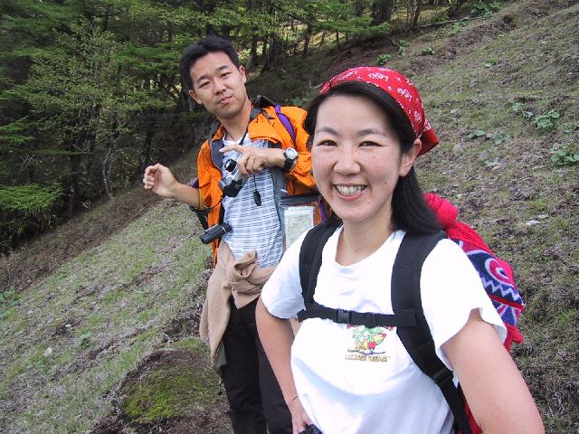

|
 |
still clean |
|
oh, dear ! |
Jan and deer boots after firstday |
|
 Masumi, Akira, Stefan and Jan |
|
|
|
Akira dancing |
|
reward |
|
Just wanted to tell you a bit about the trip...
Akira, Jan and me took the 5:29 train from Hitachinoushiku
and
arrived in Ikebukuro at 6:39. About two minutes later Masumi called
from home to tell us that she had overslept. (I think somebody
is
building a reputation here !) So instead of the 6:50 express train
we took the one at 7:30 which was not really so bad, only that
instead of having direct connections at Seibu-Chichibu and
Mitsumineguchi we now had to wait more than half an hour at each
station. We had a nice chance to watch the swallows feeding their
offspring at Mitsumineguchi Eki, though. (Pictures !)
The non-ropeway option was pretty much out of the question
at this time, after the ascent and a quick visit to the shrine
it was about 11:20 before we finally got going, quite late
considering we had got up at four. After the heavy rain on
Friday and on early Saturday morning, it stopped raining around
9am just as predicted. For a moment at least. Luckily the rain
was only rather light during our ascent to the hut, but the trails
were pretty muddy. The highlight of the first day definitely were
the deer on Shiwairayama. They came extremely close and virtually
let themselves be hand-fed. Masumi and one of the deer only got
to
about two metres of each other, then the deer twiched a bit, Masumi
twitched a bit more and they leapt away from each other.
The pictures of the deer were not taken with a zoom lens, by the
way.
We reached Kumotoriyama Sensou just before 5pm after a leisurely
(read: all four of us were pretty unfit) walk just under map time,
looking a bit as if we had taken part in a mud wrestling competition.
In the evening we played the German board game 'Die Siedler von
Catan' that Jan had carried up the mountain while drinking the
beer we had made Masumi pay for making us wait in the station.
The next morning we climbed the final 30 minutes to Kumotoriyama
that defied its name: although there was a solid cloud cover
below 1800 meters, the summit of Kumotoriyama was sunny and we
had a beautiful view of still snow-covered Fujisan.
The descent was a bit depressing as we dove back into the clouds
rather soon and stayed there for the rest of the trip. (Remind
me to discuss his definition of 'basically just downhill' with
Paul
on Wednesday !)
We got slightly worried when some people that we talked to
on the
summit told us that it had taken them about 13 hours to walk
from the Kumotoriyama hut to Okutama Eki, the map time was only
about seven hours and we had planned to make it in that time.
In
the end it took us slightly under eight hours including some
generous breaks, so those people must have done something seriously
wrong. There was light rain again a large part of the way down
from
Kumotoriyama, especially on the final mudslide down the ridge.
When
we had finally reached the road leading to Okutama we heard a
thunderstorm close by, but we made it into the onsen before the
downpour started. (The guys actually had to wait for half an hour
before getting in because it was so crowded.)
We ended the trip with a nice dinner in an Italian restaurant
in
Shinjuku (I am still surprised they let me in with my mud-crusted
hiking pants). I am not sure whether we successfully scared Paul
into believing that we got lost ("Paul ! Paul ! It's getting
dark
and we lost the way ! Do you know the number of the mountain rescue
?!").
probably the guy singing "O sole mio" was too loud.
{kind=link}